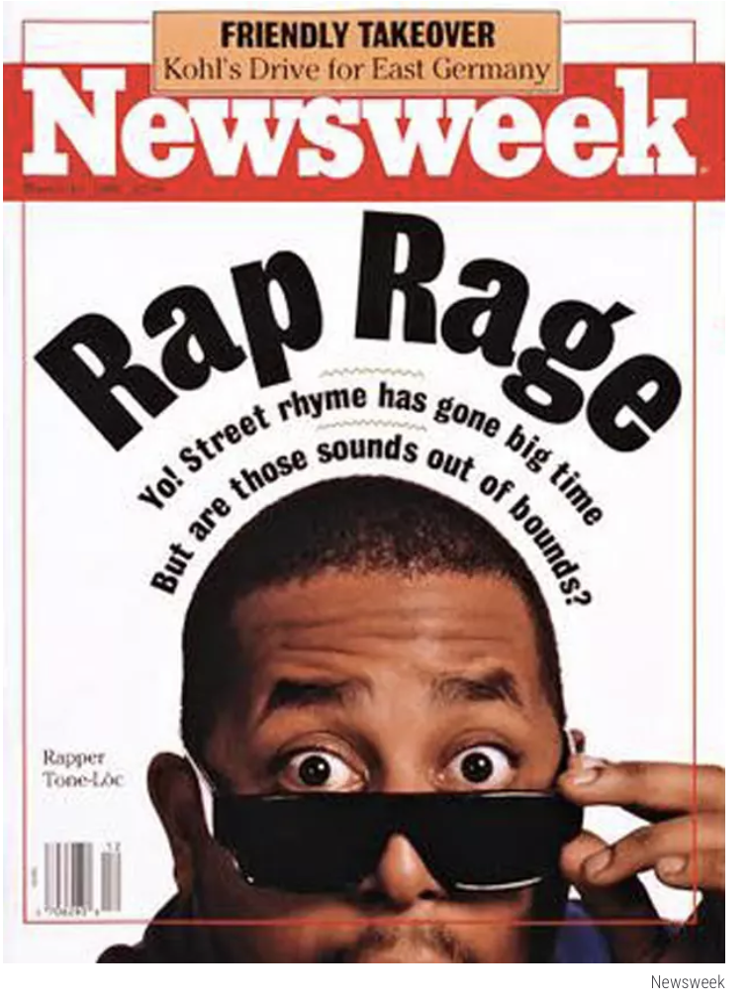

Track 01 — Eli Werstler
Hip hop originated from the South Bronx in the 1980s as a communal, spiritually charged practice. It consisted of four elements: DJing, MCing, b-boying, and graffiti. Together they functioned as a liturgy for communities neglected by the state. Three decades later, the genre seems to have largely forgone its sacred energy and has gradually transitioned toward the market, replacing collective spiritual resistance with a secular faith in wealth accumulation and capitalist aspiration. This track traces that arc through three eras;Community, Hustle, and Mogul. Together they follow the gospel of finding purpose from the block party to chasing the bag in corporate board room. I argue that this transformation was not corrupt but instead a survival strategy. When the state withdrew and communal structures collapsed, prosperity through hip hop became the only solution.
01 / The Community Era
1990s
Born from the block parties of a devastated South Bronx, hip hop emerged as a communal spiritual practice. It was a collective reflection of survival and finding meaning in the face of state abandonment and systematic persecution. The Wu-Tang Clan, operating from Staten Island with nine rappers driven by Five-Percent Nation theology, embodied this communal practice. Their debut album Enter the Wu-Tang (36 Chambers) (1993) was not a commerical product but a declaration of collective identity and sacred resistance.
Wu-Tang Clan's 1993 debut introduced nine Five-Percent Nation driven MCs. Each had a distinct persona but bound by that same collective identity. The piece was a declaration of artistic and theological community, a song in which the clan transformed their ideology into music. It stands in sharp contrast to the mercantile branding of later and modern hip hop. Wu-Tang stayed rooted in the collective, asserting god and the mic as fundamental units of power.
The 90's gave way to a severe crack epidemic of communites throughout Staten Island. During this devastation, Wu-Tang Clan released C.R.E.A.M. The hit defined cash as a survival necessity for young Black men, who were excluded from legitimate economic participation. The acronym "Cash Rules Everything Around Me" frames money not as aspiration but as grim necesity. Many say the song is hip hop's first great theological statement about what actually governs in abandoned communities in America. It captures the tension between communal values and the seductive market.
Run-DMC's relationship with Adidas marked the establishment of hip hop's commercial future, solidified when they held up their shell-toe sneakers to tens-of-thousands of fans at Madison Square Garden in 1986. It was the first major corporate partnership in the genre's history. Adidas tracksuits and shell-toe Superstars was the new uniform, signaling belonging and street authenticity as collective identity. This moment is a great representation of the intersection of the sacred and the commercial. The marketing stunt marked the brand as a symbol of membership into the hip hop community, but prempted the complete commodification of the genre.
↗ MR PORTER — How Run-DMC Earned Their Adidas Stripes ↗ Business of Fashion — Origin Story02 / The Hustle Era
2000s
In the wake of the crack epidemic, welfare reform, and mass incarceration, the communal structures that had driven early hip hop collapsed, and commercialized hip hop would begin to dominate. 50 Cent's Get Rich or Die Tryin' (2003) arrived as an embodiment of this new theology: the title the creed, the album a platform for building his new empire. 50's street-survival became a brand asset. The sacred energy of hip hop didn't disappear, however. It was reformed and redirected, and the hustle became the industry's sacred duty.
In Da Club, by 50 Cent and produced by Dr. Dre, was a commercial product as much as it was recorded as a song, released Super Bowl Weekend, 2003. The music video itself was orchestrated to establish 50 Cent as a marketable entity, with Eminem and Dr. Dre directing the process. The content consisted of self-mythologization and the glamification of club culture, the production strategy aligning perfectly to announce that hip hop is a fully realized industry now. It exemplifies the theology of the hustle. Success feels like divine election by god and community, and the "something-from-nothing," street narrative would become a marketing campaign.

As hip hop was beginning its corporate crossover, Newsweek's 1990 cover story was published, revealing the mainstream media simultaneous fear and fetishization of hip hop and its subverse energy. The cover framed the music as something of a societal threat, titling it "Rap Rage". This reflected the mainstream registration of the genre's cultural power, while seeking to control its radical dimensions, as often is the case. This document shows the politics of "owning the narritive." Hip hop's commercial value was becoming evident to corporations, and the ethos around rap was at its inflection point.
↗ Washington Post — "Critics Hit Newsweek's Bum 'Rap'" (1990)50 Cent's Reebok deel made him one of the first rappers to recieve a deal with a mainstream brand to rival Run-DMC's. Lanuching alongside his album Get Rich or Die Tryin', the deal would scale dramatically as the relationship exploded accross various forms of media. The campaign used 50's street credibility around survival and authenticity as something of a corporate asset. This shows how the sacred imagery of the street could market products to suburban customers. The hustle aesthetic is no longer community value and is instead a product to be sold.
↗ Chief Marketer — Campaign OverviewThis video shows some behind-the-scenes footage from the "I Am What I Am" campaign. It displays the process that goes into the commercial; the collaboration between street and boardroom. The production of 50's image required careful consideration, and the tension between authenticity and marketibility was visible in the mythology of the campaign. The glimpse into the construction of hip hop's commercial identity, and the moment hustle theology because part of corporate strategy.
03 / The Mogul Era
2010s – 2020s
Hip hop was becoming the most consumed music accross the globe by the 2010s. Its leading figures have become moguls. They are larger than rappers, but CEOs, investors, and owners of billion-dollar companies accross liquor, streaming, and sports leagues. Jay-Z started his career as a street hustler, but emerged as rap's prophet. His music became synonymous with his brand, preaching generational wealth as the ultimate mission. Getting rich became the gospel of rap and rap's followers.
4:44 is one of the most highly aclaimed works by Jay-Z, and included the track titled "The Story of O.J." The song is an excellent representation of mogul theology in modern hip hop, as Jay-Z raps about financial literacy ang generational wealth being the ultimate path to Black liberation. The song blends classic communal resistance themes with capitalistic language. The animated video, depicting 1930s racial caricatures, brings economic gospel to the screen, drawing on a long history of Black exclusion from the upper echelon of society. The financial sermon is intertwined with racial politics, and Jay-Z's message preaches wealth as the ultimate truth.
↗ The Story of O.J. — WikipediaWhile most products are typically launched in some sort of commerical marketing campaign, Jay-Z instead introduced Armand de Brignac "Ace of Spades" champagne through this 2006 muic video. The debut of the brand became a cultural event rather than a commerical launch, and was a master class in tying Jay-Z' artistic output with his commercial enterprise. The two factors of his empire amplified each other, producing huge cultural and financial value. He would go on to aquire the brand in 2014, completing the arc from performer to owner; from artist to capitalist.
↗ Armand de Brignac — WikipediaJay-Z recorded Dead Presidents in 1996, capturing Jay-Z's pre-mogul history. It showed the gritty hustle rooted in Bed-Stuy mythology, depicting the ambivalence and necessity of money. This early work contrasts with his 2008 memoir Decoded
Recorded in 1996, Dead Presidents captures Jay-Z in his pre-mogul moment — the hustle vivid, gritty, rooted in Bed-Stuy survival mythology, money coded with ambivalence . Contrasting this early document with his 2008 memoir Decoded — a prestige cultural artifact sold in bookstores and marketed to mainstream literary audiences — compresses the entire arc of commercialization into a single career. The distance between these two artifacts is the distance hip hop traveled in fifteen years: from survival theology to brand mythology.
↗ Dead Presidents — Wikipedia